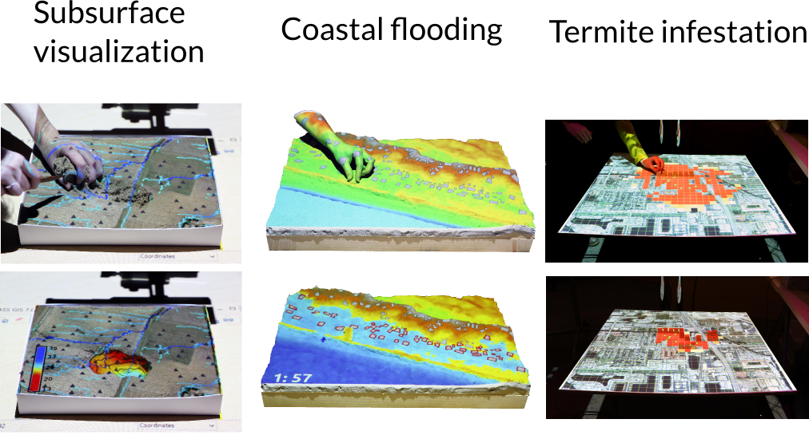

Open Source Approach to Urban Growth Simulation
Anna Petrasova, Vaclav Petras, Derek Van Berkel, Brendan Harmon, Helena Mitasova and Ross Meentemeyer
Center for Geospatial Analytics at North Carolina State University
July 2016
Urbanization

Urban growth models
simulating the future scenarios
Urban growth models: challenges
Can we understand the behavior of the model?Can we make sure it is working as described?

FUTURES
FUTure Urban-Regional Environment Simulation- stochastic, patch-based land change model
- simulates urban growth
- accounts for location, quantity,
and pattern of change - positive feedbacks (new development
attracts more development) - allows spatial non-stationarity
FUTURES
- open source (+ dependencies)
- modular
- transparent

POTENTIAL
- multilevel logistic regression for development suitability accounts for variation among subregions (for example policies in different counties)
- inputs are uncorrelated predictors (distance to roads and development, slope, ...)
DEMAND
- estimates the rate of per capita land consumption for each subregion
- extrapolates between historical changes in population and land conversion
- inputs are historical landuse, population data, population projection

PGA
- stochastic algorithm
- converts land in discrete patches
- inputs are patch characteristics (distribution of patch sizes and compactness) derived from historical data

Open source FUTURES
To go beyond experimental prototypewe needed to make FUTURES:
- more efficient and scalable
- as easy to use as possible for a wider audience
- open source and maintainable in the long run
⇒ new FUTURES GRASS GIS add-on r.futures
Why GRASS GIS?
For model developers:- modular architecture: modules in C/C++ and Python
- all needed GIS functions at hand
- efficient I/O libraries
- able to process large datasets
- automatically generated CLI and GUI
- infrastructure for online manual pages
- daily compiled binaries for Windows
(thanks to M. Landa, FCE CTU in Prague) - maintained by community and developers
Why GRASS GIS?
For model users:- multiplatform
- graphical user interface
- scriptable (Bash, Python, R)
- easy installation:
easy installation:
> g.extension r.futures - easy installation: available suite of tools for further analyses and visualization (spatio-temporal analyses, animations)
r.futures

r.futures: GUI

r.futures: CLI
r.futures.pga -s subregions=counties developed=urban_2011 \
output=final demand=demand.csv discount_factor=0.1 compactness_mean=0.1 \
predictors=road_dens_perc,forest_smooth_perc,dist_to_water_km,dist_to_protected_km \
devpot_params=potential.csv development_pressure=devpressure_0_5 \
n_dev_neighbourhood=30 gamma=0.5 patch_sizes=patches.txt num_neighbors=4 output=final
r.futures: TUI
TUI: Tangible User Interface
Tangible Landscape

Tangible Landscape couples a digital and a physical model through a continuous cycle of 3D scanning, geospatial modeling, and projection
Tangible Landscape: applications
FUTURES: tutorials
- Sample dataset for North Carolina
- Tutorial for Triangle (Raleigh, Durham, Chapel Hill) on GRASS GIS Wiki
- Detailed workshop material for Asheville, NC on GRASS GIS Wiki
- r.futures manual pages
FUTURES: references
- Meentemeyer, R. K., Tang, W., Dorning, M. A., Vogler, J. B., Cunniffe, N. J. and Shoemaker, D. A., 2013. FUTURES: Multilevel Simulations of Emerging UrbanRural Landscape Structure Using a Stochastic Patch-Growing Algorithm. Annals of the Association of American Geographers 103(4), pp. 785–807.
- Dorning, M. A., Koch, J., Shoemaker, D. A. and Meentemeyer, R. K., 2015. Simulating urbanization scenarios reveals tradeoffs between conservation planning strategies. Landscape and Urban Planning 136, pp. 28–39.
- Pickard, B. R., Van Berkel, D., Petrasova, A. and Meentemeyer, R. K., in prep. Future patterns of urbanization reveal trade-offs among ecosystem services.
- Petrasova, A., Petras, V., Van Berkel, D., Harmon, B. A., Mitasova, H., and Meentemeyer, R. K., 2016. Open Source Approach to Urban Growth Simulation. Int. Arch. Photogramm. Remote Sens. Spatial Inf. Sci., XLI-B7, 953-959.